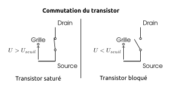
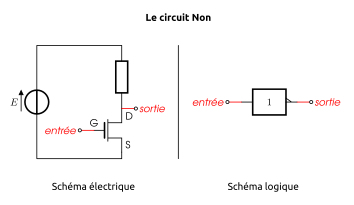
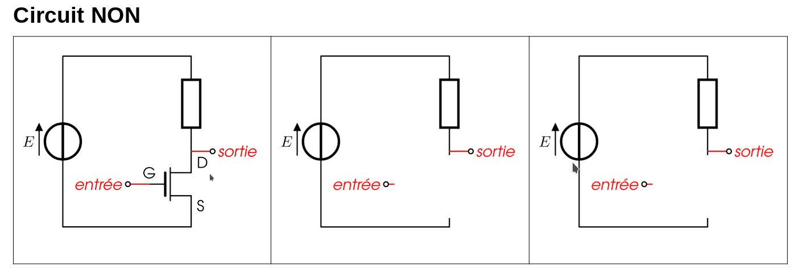
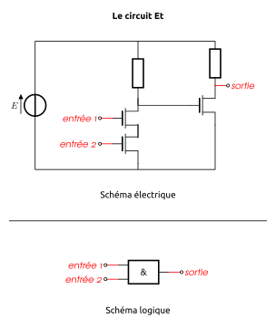
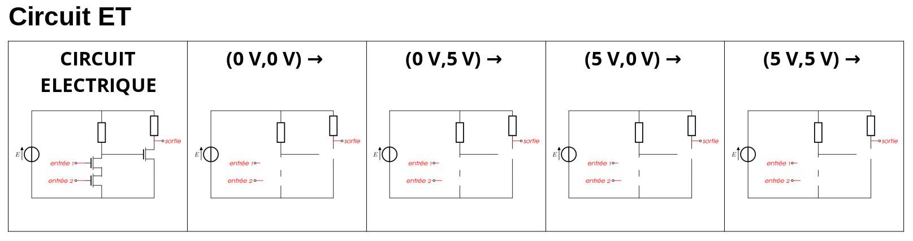
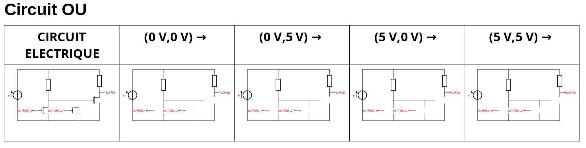

Programme Officiel
| Contenus | Capacités attendues | Commentaires |
|---|---|---|
| Modèle d’architecture séquentielle (von Neumann) | Les circuits combinatoires réalisent des fonctions booléennes. |
L’invention du transistor en 1947 a ouvert l’ère de l’électronique pour l’humanité et a permis à l’informatique de se miniaturiser et de se démocratiser au grand public.
Nous allons voir maintenant, comment il est possible de réaliser des opérations logiques à l’aide de transistors. En effet, chaque processeur possède dans son jeu d’instructions des opérations booléennes (ou opérations bit à bit).
Il existe des transistors de diverses technologies, pour plus de simplicité, nous étudierons dans ce chapitre qu’un seul type de transistor: les transistors N-Mos. Dont voici le symbole électrique

Un transistor CMOS-N possèdent trois bornes nommées:
- La grille G qui commande le fonctionnement du transistor,
- Le drain D,
- et la source S.
Une simulation de ce type de transistor est disponible en suivant ce lien: http://www.falstad.com/circuit/e-nmosfet.html
Commutation du transistor
Pour réaliser des circuits logiques, nous utilisons le transistor en interrupteur commandé.
En fonction de la tension appliquée entre la grille et la source , le dipôle entre le drain et la source se comporte soit comme un interrupteur ouvert soit comme un interrupteur fermé.
En plus
La résistance entre le Drain et la Source dépend fortement de la tension appliquée entre la grille et la source: , c’est une particularité des matériaux semi-conducteurs utilisés dans les transistors.

By Saumitra R Mehrotra & Gerhard Klimeck, modified by Zephyris - Own work, Public Domain, Link
Dans cette simulation, la tension de seuil se situe aux alentours de 0,45V, si bien que si:
- : $R_{DS} +$, l’interrupteur commandé est ouvert.
- : $R_{DS} $, l’interrupteur commandé est fermé.
En utilisant des tensions de commandes n’ayant que deux valeurs: 0, ou 5V, il est possible d’utiliser le transistor comme un interrupteur placé entre les bornes et et commandé par la tension .

Réalisation d’une porte NON(NOT)
La fonction booléenne non(x) associe à une valeur booléenne son “contraire”.
Sa table de vérité est:
| x | non(x) |
|---|---|
| 0 | 1 |
| 1 | 0 |

Schémas équivalents
 1. Réaliser les deux schémas équivalents au circuit pour et en remplaçant le transistor par un interrupteur. 2. Vérifier que le circuit réalise bien la fonction booléenne . On rappelle que la tension aux bornes d’un fil(ou d’un interrupteur fermé) est nulle, et la tension aux bornes d’une résistance suit la loi d’Ohm: .
Réalisation d’une porte ET(AND)
La fonction booléenne et(x, y) a la table de vérité suivante:
| x | y | et(x,y) |
|---|---|---|
| 0 | 0 | 0 |
| 0 | 1 | 0 |
| 1 | 0 | 0 |
| 1 | 1 | 1 |

Schémas équivalents
 1. Réaliser les quatre schémas équivalents pour les couples de tensions d’entrée au circuit en remplaçant les transistors par des interrupteurs. 2.Vérifier que le circuit réalise bien la fonction booléenne .
Réalisation d’une porte OU(OR)
La fonction booléenne a la table de vérité suivante:
| x | y | ou(x,y) |
|---|---|---|
| 0 | 0 | 0 |
| 0 | 1 | 1 |
| 1 | 0 | 1 |
| 1 | 1 | 1 |

Schémas équivalents
 1. Réaliser les quatre schémas équivalents pour les couples de tensions d’entrée au circuit en remplaçant les transistors par des interrupteurs. 2.Vérifier que le circuit réalise bien la fonction booléenne .
Autres portes booléennes
La porte NON-ET(NAND)
Table de vérité
| x | y | nand(x,y) |
|---|---|---|
| 0 | 0 | 1 |
| 0 | 1 | 1 |
| 1 | 0 | 1 |
| 1 | 1 | 0 |
Schématisation
La porte NON-OU (nor)
Table de vérité
| x | y | nor(x,y) |
|---|---|---|
| 0 | 0 | 1 |
| 0 | 1 | 0 |
| 1 | 0 | 0 |
| 1 | 1 | 0 |
Schématisation

La porte OU eXclusif (xor)
Table de vérité
| x | y | xor(x,y) |
|---|---|---|
| 0 | 0 | 0 |
| 0 | 1 | 1 |
| 1 | 0 | 1 |
| 1 | 1 | 0 |
Schématisation
La porte ET inclusif (xnor)
Table de vérité
| x | y | xnor(x,y) |
|---|---|---|
| 0 | 0 | 1 |
| 0 | 1 | 0 |
| 1 | 0 | 0 |
| 1 | 1 | 1 |
Schématisation 
- Chapitre 13. Les Portes booléennes Informatique et sciences du numérique Spécialité ISN en terminale S - Avec des exercices corrigés et des idées de projets par Gilles Dowek